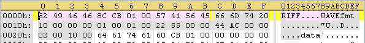

Date de publication : 8 mai 2007 15h15
Auteur : BeatriX
3. waveOut
3.1. Un exemple d'utilisation avec GoAsm
Cette section va aborder l'utilisation des fonctions waveOut qui sont chargées de lire des samples au format WAV. Il me semble qu'il est intéressant de connaître leur usage avant d'attaquer l'analyse pure et dure de ce binaire.
Voici les fonctions utilisées dans meloquynthe (issues de winmm.dll) :
- waveoutOpen
- waveOutPrepareHeader
- waveOutUnPrepareHeader
- waveOutClose
- waveOutReset
- waveOutWrite
J'ai recodé et compilé à l'aide de GoAsm, compilateur de Jeremy Gordon, un petit projet qui reprend de façon très simple le fonctionnement de la gestion de la musique par meloquynthe en exploitant l'un des samples du keygenme. Voici le projet complet téléchargeable ICI.
En résumé, le programme commence par ouvrir le device à l'aide de la fonction waveOutOpen puis crée un thread qui sera chargé de contrôler la musique, c'est-à-dire d'initialiser le buffer qui contient le sample, d'alimenter le device avec waveOutWrite à chaque fois que cela est nécessaire et de conclure quand cela est demandé.Voici le code commenté :
WAVEHDR STRUCT
lpData DD 0
dwBufferLength DD 0
dwBytesRecorded DD 0
dwUser DD 0
dwFlags DD 0
dwLoops DD 0
lpNext DD 0
Reserved DD 0
WAVEHDR ENDS
WAVEFORMATEX STRUCT
wFormatTag DW 0
nChannels DW 0
nSamplesperSec DD 0
nAvgBytesPerSec DD 0
nBlockAlign DW 0
wBitsPerSample DW 0
cbSize DW 0
WAVEFORMATEX ENDS
MSG STRUCT
hwnd DD 0
message DD 0
wParam DD 0
lParam DD 0
time DD 0
pt DD 0
MSG ENDS
.const
WAVE_MAPPER EQU -1
CALLBACK_THREAD EQU 20000h
MM_WOM_OPEN EQU 3BBh
MM_WOM_CLOSE EQU 3BCh
MM_WOM_DONE EQU 3BDh
PAGE_READWRITE EQU 4h
MEM_COMMIT EQU 1000h
MEM_DECOMMIT EQU 4000h
INFINITE EQU -1
.data
memptr DD 0
ThreadID DD 0
hDeviceAudio DD 0
hEvent DD 0
hEvent2 DD 0
titre DB "FRET",0
texte DB "waveOut example from meloquynthe",0
WaveFormat WAVEFORMATEX <1,1,0x5622,0xAC44,2,0x10,0>
WaveHeader1 WAVEHDR <>
MyMessage MSG <>
MySample1 INCBIN MySample1.bin ; <--- Sample rippé
StopMusic DB 0
.code
start:
; **************************** création du Thread de gestion de la musique
push offset ThreadID
push 0
push 0
push offset ThreadWave
push 0
push 0
call CreateThread
; **************************** Créer un event pour la synchronisation avec le thread
push 0
push 0
push 0
push 0
call CreateEventA
mov [hEvent], eax
; **************************** Créer un event pour la synchronisation avec le thread
push 0
push 0
push 0
push 0
call CreateEventA
mov [hEvent2], eax
; **************************** Ouvrir le device --> Le thread va recevoir MM_WOM_OPEN
push CALLBACK_THREAD ; fdwOpen
push 0 ; dwCallbackInstance
push [ThreadID] ; dwCallback
push offset WaveFormat ; pwfx
push WAVE_MAPPER ; uDeviceID
push offset hDeviceAudio ; phwo
call waveOutOpen
; **************************** Attendre que le thread ait fini son initialisation
push INFINITE
push [hEvent]
call WaitForSingleObject
; **************************** Préparer le header
push SIZEOF WAVEHDR
push offset WaveHeader1
push [hDeviceAudio]
call waveOutPrepareHeader
; **************************** jouer le sample
push SIZEOF WAVEHDR
push offset WaveHeader1
push [hDeviceAudio]
call waveOutWrite
; **************************** Petit message :)
push 0
push offset titre
push offset texte
push 0
call MessageBoxA
; **************************** Arrêter la musique
mov b [StopMusic], 1
; **************************** Attendre que le thread ait fini sa fermeture
push INFINITE
push [hEvent2]
call WaitForSingleObject
; **************************** libérer le buffer
FreeBuffer:
push MEM_DECOMMIT
push 1CB60h
push [memptr]
call VirtualFree
; **************************** Libérer les handles des 2 events
push [hEvent]
call CloseHandle
push [hEvent2]
call CloseHandle
push 0
call ExitProcess
; ******************************************
;
; Thread de gestion de la musique
;
; ******************************************
ThreadWave:
pushad
WaitForMessage:
xor esi, esi
push esi
push esi
push esi
push offset MyMessage
call GetMessageA
mov edi, [MyMessage.message]
mov ebp, [MyMessage.lParam]
cmp edi, MM_WOM_OPEN ; <------------------- Message envoyé par waveOutOpen
je >InitBuffer
cmp edi, MM_WOM_CLOSE ; <------------------- Message envoyé par waveOutClose
je >CloseThread
cmp edi, MM_WOM_DONE ; <------------------- Message envoyé par le device
je >SendSample
jmp WaitForMessage
ret
; *****************************
;
; Fixer le WaveHeader
;
; *****************************
InitWaveHeader:
pushad
xor ecx, ecx
mov ebx, d [esp+28h]
mov eax, d [esp+24h]
mov d [eax], ebx
mov d [eax+4h], 1CB60h
mov d [eax+8h], ecx
mov d [eax+0Ch], ecx
mov d [eax+10h], ecx
mov d [eax+14h], 1h
mov d [eax+18h], ecx
mov d [eax+1Ch], ecx
popad
retn 8h
; *************************************************
;
; Récupérer le sample dans une VirtualAlloc
;
; *************************************************
InitBuffer:
; ************************ Allouer un buffer pour les samples
push PAGE_READWRITE
push MEM_COMMIT
push 1CB60h
push 0
call VirtualAlloc
mov [memptr], eax
mov ecx, 1CB60h
mov esi, offset MySample1
mov edi, [memptr]
rep movsb
; ************************ Initialiser le WaveHeader
push [memptr]
push offset WaveHeader1
call InitWaveHeader
; ************************ Rendre la main
push [hEvent]
call SetEvent
jmp <WaitForMessage
; *****************************
;
; Fermeture du thread
;
; *****************************
CloseThread:
push [hEvent2]
call SetEvent
push 0
call ExitThread
; *****************************
;
; Alimenter le device
;
; *****************************
SendSample:
cmp b [StopMusic], 1
je >StopwaveOut
push SIZEOF WAVEHDR
push offset WaveHeader1
push [hDeviceAudio]
call waveOutWrite
jmp <WaitForMessage
; *****************************
;
; Stopper le device
;
; *****************************
StopwaveOut:
; **************************** Stopper la musique
push [hDeviceAudio]
call waveOutReset
; **************************** libérer le WaveHeader
push SIZEOF WAVEHDR
push offset WaveHeader1
push [hDeviceAudio]
call waveOutUnprepareHeader
; **************************** Fermer le device --> Le thread va recevoir MM_WOM_CLOSE
push [hDeviceAudio]
call waveOutClose
jmp <WaitForMessage
3.2.La musique dans le Meloquynthe
Meloquynthe utilise 28 "samples" accessibles via une table située en 0x5BFF0B. Voici cette table complète que j'ai dumpé à l'aide du plugin Olly "Table exporter 1.0" de DarkSide :
0x5BFF0B
const
unsigned long Values[28] = {
0x00408997, samples de base pour buffer 1
0x004D5E2D,
0x005BFFEE,
0x0047EA41,
0x006AA1DA, samples de base pour buffer 2
0x005128A4,
0x00444FF7,
0x004260ED,
0x0049C335, samples à ajouter pour buffer 1
0x007DFF85,
0x006177BE,
0x0053036A,
0x00784F65, samples à ajouter pour buffer 2
0x007C2B31,
0x007FF49E,
0x004B8F6C,
0x0075E1A3, samples à ajouter pour buffer 1 (une fois sur 2)
0x006C7E22,
0x0081C229, samples à ajouter pour buffer 1 (une fois sur 2)
0x007A406C,
0x0083C0F1, "crackme" -- paroles à ajouter au buffer en cours (de façon aléatoire)
0x005DCB78, "tendinite"
0x00461DD4, "F7"
0x004F559B, "Yo"
0x005F9746, "meat"
0x0054CEF9,
0x006E8B1C,
0x0063440A
};
Ces morceaux sont en fait les parties "data" de fichiers au format WAV. Les entêtes sont donc manquantes pour obtenir des fichiers *.wav valides. On peut néanmoins coder un petit outil qui permet d'extraire ces morceaux et d'ajouter des entêtes pour reconstruire les 28 fichiers WAV utiles au meloquynthe. Vous pouvez récupérer ces 28 morceaux que j'ai reconstitués ICI. Le header de 44 bytes ajouté a cette forme là :

Le meloquynthe réalise en réalité une véritable composition et fait ses arrangements en choisissant un morceau de base et en ajoutant d'autres morceaux choisis. Il ajoute de temps en temps une parole choisie parmi "crackme", "tendinite", "F7", "Yo" et "meat". Voici la routine commentée qui réalise ce petit travail :
*********************** * * 7A3F74 * *********************** ebp = pointeur vers la structure du buffer joué pushad xor eax, eax cmp byte ptr [783BDDh], al EndingKeygen == 0 ? jne 7C2AEEh call 7A3FF7h ======================= = choix du morceau ======================= mov ebx, 5BFF0Bh cmp ebp, 7FE173h je @F mov ebx, 5BFF1Bh @@: push 4h call 6E7120h ------ Choix aléatoire entre 0 - 4 - 8 - 12 shl eax, 2h add eax, ebx push 1CB60h push dword ptr [eax] push ebp call 442E8Ch ------- copier le morceau choisi dans le buffer à jouer ======================================= = Ajouter un sample au morceau ======================================= mov ebx, 5BFF2Bh cmp ebp, 7FE173h je @F mov ebx, 5BFF3Bh @@: push 4h call 6E7120h ------ Choix aléatoire entre 0 - 4 - 8 - 12 shl eax, 2h add eax, ebx push 0E5B0h push dword ptr [eax] push ebp call 7A400Bh -------- Ajouter le morceau test dword ptr [77ADB5h], 2h jne label_47E961h ======================================= = Ajouter un sample au morceau ======================================= mov ebx, 5BFF4Bh cmp ebp, 7FE173h je @F mov ebx, 5BFF53h @@: push 2h call 6E7120h ---------- Choix aléatoire entre 0 - 4 shl eax, 2h add eax, ebx push 0E5B0h push dword ptr [eax] push ebp call 7A400Bh -------- Ajouter le morceau label_47E961h: xor eax, eax mov dword ptr [ebp+20h], eax push 2h call 6E7120h ---------- Choix aléatoire entre 0 - 4 or eax, eax je @F ======================================= = Ajouter une parole au morceau ======================================= push 5h call 6E7120h ---------- Choix aléatoire entre 0 - 4 - 8 - 12 - 16 shl eax, 2h mov eax, dword ptr [eax+5BFF5Bh] mov dword ptr [ebp+20h], eax ---------- sauver la parole jouée (pour vérification ultérieure) push 0E5B0h push eax push ebp call 7A400Bh -------- Ajouter le morceau @@: push ebp call 7C2980h ---------- waveOutWrite et [77ADB5]++ popad ret
Meloquynthe utilise deux buffers pour assurer une continuité dans la musique, c'est-à-dire pour que le device audio ne manque jamais de samples à jouer. Ceci permet également de varier la mélodie en choisissant des morceaux de base différents pour chaque buffer. Chaque buffer est géré par deux structures WAVEHDR dont les adresses sont 0x7FE173 et 0x5302E8. Ceci explique les lignes "cmp ebp, 7FE173h" dans le code précédent.
Copyright (C)- FRET (2007)